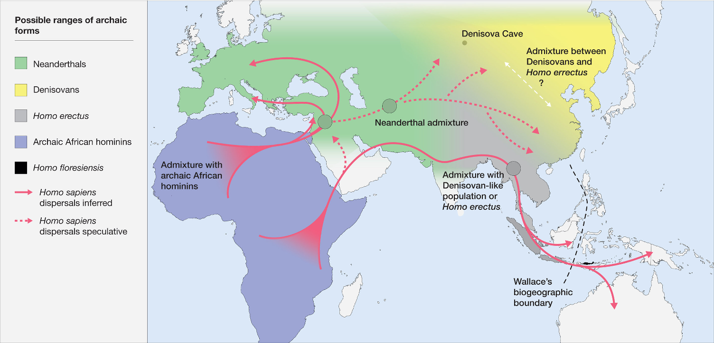
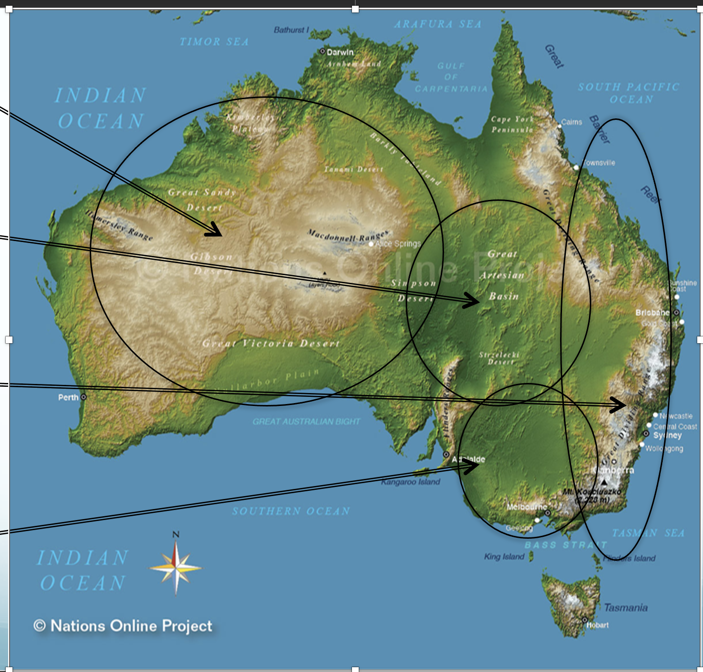
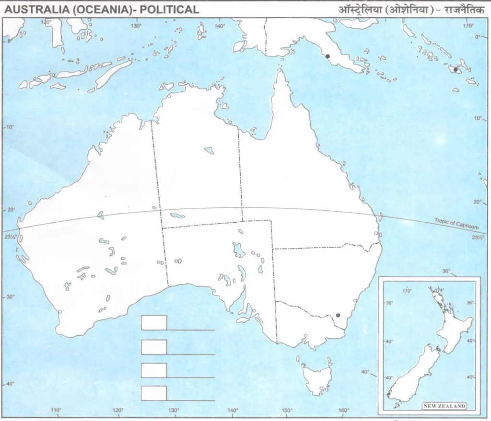
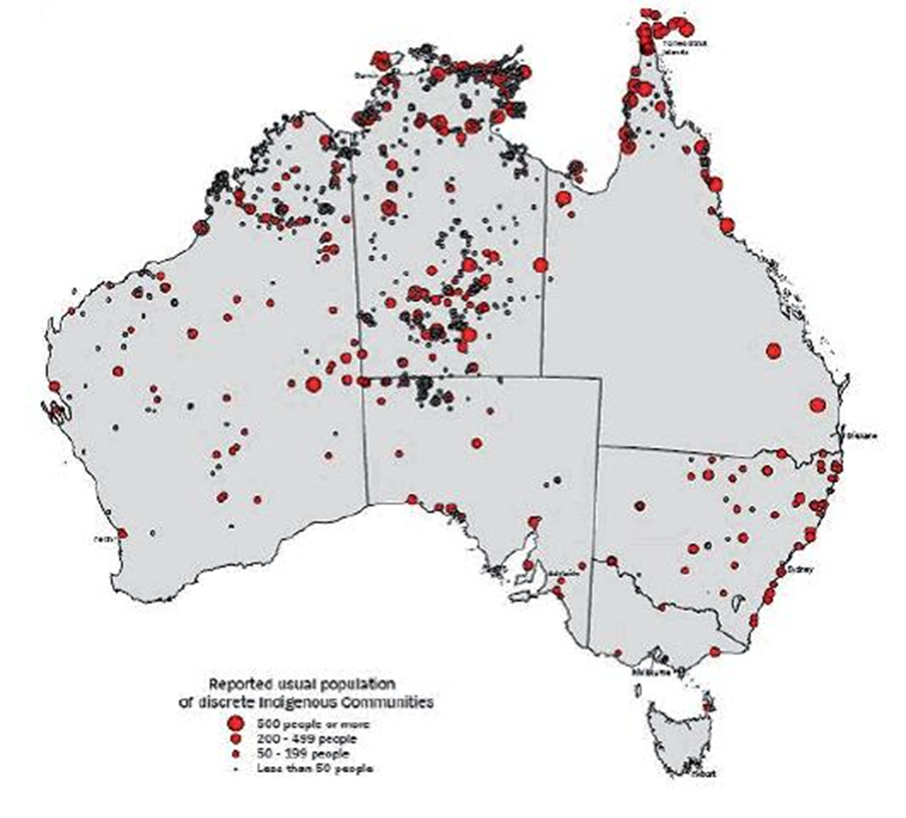
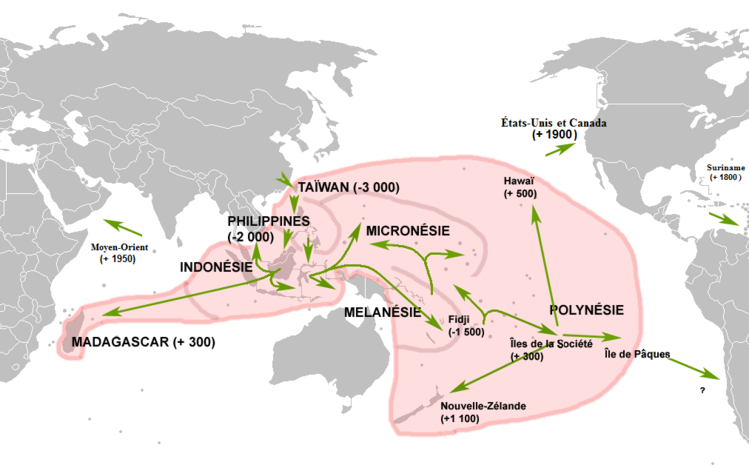

Midterm Geography Review
Section I - Cultural Talks
Pop vs. Folk Culture
Jimmy Jimmy cocoa puff
Chart
|
|
Popular Culture
|
Folk Culture
|
|
Definition
|
Traditionally practiced by homogenous groups
|
Shared between heterogeneous people
|
|
Hearth (center of innovation)
|
Developed countries
|
None
|
|
Original creator
|
Traceable person / corporate
|
None
|
|
Availability
|
-
On the Internet
-
Not generally affected by physical geography
|
-
Limited by physical geography
|
|
Music
|
-
Solo/Collaboration
-
For money-making and clout
|
-
Passed orally
-
For rituals
-
Usually contains a message or story
|
|
Clothing
|
-
Online/store purchase (easy)
-
Largely decided by social class or occupation
|
-
Prisoner of geography: limited to accessible materials
|
|
Popularity
|
/
|
Falling off, but can become a popular culture
|
-
Habit
- repetitive act by an individual
-
Custom
- a repetitive act that is practiced by many people
-
Material culture
: a collection of social customs & physical and visual elements
-
Taboo
- restriction of behavior
-
Based on social customs
-
Varies with culture
Case Study: Crash Course
-
Contrary to folk culture,
pop
culture
diffuses and evolves quickly
.
-
Social Class defines culture
-
Low - popular/mainstream culture
-
High - practiced by elites
-
The group with the
most power
can control what is
mainstream
culture
-
Subculture
- a culture within a bigger culture, often with
variances
-
Ethnocentrism
is judging a culture based on the judger’s considered norms
-
E.g., eurocentrism, and early craniology
-
pushing back on mainstream culture, challenging the norm
-
a catalyst for cultural change
-
When society is lacking on adapting with new technologies
-
E.g., GPT-4 and the Open Letter
Anthropology
The study of mankind
Fields of Anthropology
|
Ethnology (Cultural Anthr.)
Comparing cultural characteristics between cultures around the world
|
Linguistics
Studying patterns and movements (
language relocation
)
of language families
|
|
Bio./Physical Anthr.
Studying biological changes to humans through history
|
Archaeology
Using older materials to reconstruct those cultures and civilizations
* Not to be confused with
paleontology
, the scientific study of fossils
|
Bias in Historical Studies
-
Negative attitudes
towards s.o.
in which the person is
NOT CONSCIOUS
of it
-
E.g., An orthodontist is always a man
-
Traditional understanding & output of bias, e.g.,
overt racism
, racist comments.
-
E.g., hatred of black men
-
Race
is a group of people based on shared physical traits as distinct by society.
-
Ethnicity
is a social group that has a common national or tradition
-
NOT BASED ON WHERE YOU WERE BORN
-
A minority
is a group in society in a lesser position and has been marginalized into that position, e.g., Chinese Americans
-
Racism
is when systems of societal processes are made to create inequalities between races.
-
E.g, Apartheid of South Africa
Cultural Diffusion
Active Transport where
Culture Viewability
-
The
iceberg
metaphor indicated the nature of cultures:
-
Visible
: dress, customs, and symbols - much of the material cultures
-
Invisible
: the underlying world views, beliefs, and values of the culture
-
Cultural Appreciation
: when one understands a culture without considering the invisible cultures.
-
Types of
material culture
:
-
Movable
: Something easy to transport and pick up, e.g., a Big Mac
-
Immovable
: Something difficult/impossible to move, e.g., McD Restaurant
Diffusion
-
The spreading of culture from the hearth to somewhere else
-
When the people and items
move locations
-
Weakens the hearth
-
How
folk culture
usually spread
-
When the hearth remains
strong
and the number of people practicing the culture grows
-
Hierarchical
-
V
ia
assimilation
and
acquisition
WHAT THE FUCK DOES THAT MEAN
-
from the most powerful to the least powerful (in the social hierarchy)
-
Pop culture
can spread this way
-
Diffuses in all directions rapidly, referred to as a
snowball effect
-
E.g., internet memes, in which it is exposed to everyone
Berry’s Model of Acculturation
I can’t think of anything quirky to put here
Chart
|
/
|
Reject Old Culture
|
Accept Old Culture
|
|
Accept New Culture
|
-
Assimilation - NEW
-
Comes into a new society and forgets old society: takes on new lifestyles.
-
E.g., Mexican residents emigrate to America
|
-
Integration - SWITCH
-
Come into a new society, yet does not forget the old society.
-
The migrant person can do a code switch.
-
Provide cultural diversity to the community.
-
E.g., SHSID Students
|
|
Reject New Culture
|
-
Marginalization - LIMBO
-
The migrant’s culture is rejected by the new society, yet they reject their own culture too.
-
May incite frustration - E.g., North Korean refugees to South Korea
|
-
Separation - OLD
-
Retaining old culture while not taking on new culture, which separates the migrant into a designated community
-
E.g., Amish people
|
-
When the migrant is so expedient in both that the cultures practically
combine
-
Not to be confused with
code-switching
from Integration.
-
Cultural Resistance
- the contesting and combatting of a new culture
-
Happens when there is pushback due to a threatened feeling from society
Case Study: Mississippian Chinese
-
Assimilation
: The Mississippian Chinese do not seem to know how to speak Chinese, since their ancestors settled here, far away from their homeland a long time ago.
-
Integration/Syncretism
: They cook Chinese-style foods with accessible resources such as bacon, asparagus, etc. They also practice Baptist Christianity.
-
Separation
: Stereotyping and racial injustices continue to harm these Chinese families.
Section II - Languages
A Guide to Languages
shut up shut up shut up shut
-
A
Language
is a system of communication through verbal, mobile, and writing means, in which a group of people understand.
-
Language has a powerful force, through which
cultural identity
is expressed
.
-
Unifying
: brings together people through nationality, empathy, and commonality.
-
Dividing
: dialects, tension between lang groups, language barriers.
Categories of Languages
-
There are around 7168 living languages, according to Ethnologue.com.
-
Namesake. E.g., Spoken English, Spoken Mandarin.
-
Sign languages, Drumming languages, Morse Code, etc.
-
Namesake again. Written English, Written Mandarin, Braille, etc.
-
Literary traditions
: a system of written communication. Not all langs have a literary tradition, however.
AGAIN WHAT THE FUCK DOES THAT MEAN
Hierarchy
-
The Proto-language
is the common ancestor of all languages
-
Language Reconstruction is
used
to trace grammatical rules back to the proto-language.
-
-> this way: endless language variations e.g., dialects, accents
-
<- that way: a proto-language not constructible due to so little evidence
-
Family -> Branch -> Group ->?
-
Language, Dialects, etc.
There is no clear cut between a language and a dialect, but a language is usually considered the
standard language
of that area.
-
Dialects are regional variations of languages that fit the various needs of those residing in that area.
-
Mass media has diminished the influence of dialects.
-
E.g., received pronunciation in GB
-
M
utual intelligibility
- the varieties can mutually understand each other without prior consultation.
-
Languages are more prestigious than dialects. Linguists prefer calling dialects
“language varieties”
to avoid value judgments.
-
Lingua franca:
A
universal
language made for two people that do not have the same native language to be able to communicate with each other.
-
Cognate:
A word with the same linguistic derivation as one from another lang
-
False
cognate: such words that sound similar yet have different meanings
-
Accent
: How people
sound
words based on where they come from.
-
Isogloss
: equal-word. Boundaries where a word is said.
-
Logograms
: symbols (instead of words) are used to convey ideas. Used in Sino-Tibetan languages
-
Languages are diffused through
trade, contact, and relocation.
Branch: Indo-European
Can you say “who asked” in the following languages:
Ancestry and Diffusion
-
The earliest origins: Turkïye and the Caucus Mts.
-
3.2bln people (a lot) speak Indo-European
-
Believed proto-lang ->
proto-European
-
Nomadic Warrior Hypothesis
-
Kurgan nomads conquered a large chunk of land, which spread the language.
-
Sedentary Farmer Hypothesis
-
After the Neolithic Revolution, people settled down and developed agriculture, which increased the population drastically.
-
With a lot of people comes wider diffusion of the language.
Branches
-
Northern
: Icelandic, Swedish
-
Western
:
German, English
-
High & Low Languages:
Different variations that are differentiated by elevation and isolation.
-
E.g.,
Hindi, Punjabi
, etc.
-
Case example: North and South India has languages from different branches. In addition, India has over 430 languages in use.
-
East, West, and South partitions
-
Transportation obstruction by the
Baltic Sea
coerced variances within the branch.
-
Largest derivative -
Russian
-
Adopted from the lingua franca of the
Roman Empire
.
-
Latin continues to be the lingua franca for scientific works.
-
E.g., Spanish, French, etc.
Language: English
Another word for French, the most widely spoken language on Earth
History (isn’t this Geography Class)
-
Celts
-
the nomadic people that affected Scottish, Irish, and Welsh pronunciations.
-
Romans
-
Constantly fighting with the Celts, built Hadrian Wall.
-
Their reign died out after the Roman Empire collapsed.
-
Anglo-Saxons
-
Saxons from Germany, Angles and Jutes from Denmark.
-
Spoke
Englisc
and called this land
Angles Land
-
Angles controlled Danelaw, which brought Old Norse into English
-
Weakened due to Vikings
-
Normans
(Norweigans from France)
-
After the Wars of the Roses, France ruled Britain for 300 years.
-
They spoke
French
for official things and high life
-
They spoke
English
for peasants and common people
-
The loss of reign over Normandy led to the collapse of the Normans’ power.
Section III - Early Humans
(this place feels too blank)
Hominids
-
Group of primates that include humans, gorillas, chimpanzees, etc.
-
Hominid originally only referred to humans, Latin root
homo
means same
Genus Homo
-
Homo
- branch or cluster of species that have existed in the top branch of Hominids
Homo Habilis
-
When
: 2.4 to 1.4 mya
-
Where
: Eastern and Southern Africa
-
Notable traits
: Nicknamed “handyman” for the usage of simple stone tools
-
Discovery
: A team led by scientists Louis and Mary Leakey uncovered fossilized remains of unique early humans between 1960 and 1963 at Olduvai Gorge in Tanzania
Homo Erectus
-
When
: Between 1.89 mya and 110kya
-
Where
: Northern, Eastern, and Southern Africa
-
Notable traits
:
-
aka
Homo ergaster
-
Elongated legs, shorter arms - more human proportions
-
Adapted for ground life rather than arboreal
-
Ability to walk and run long distances and to make fire
Homo Neanderthalensis
-
When
: 400 to 40kya
-
Where
: Europe, Southwestern to Central Asia
-
Notable traits
:
-
Modern human’s closest extinct human relative
-
Used sophisticated tools, used fire, skilled hunters and gatherers
-
Sapiens were known to have mated with them
Homo Sapiens
-
When
: 300,000 years ago to present
-
Where
: Evolved in Africa, now worldwide
-
Notable traits
:
-
Lighter skeletons than earlier
homo
s
-
Very large brains averaging 1300 cubic cm
Migration of Genus Homo
-
Not a single migration, but in many waves
-
Homo erectus first to migrate out
-
Sapiens were probable to have mated with other members of the
homo
genus, such as the neanderthals
-
Solutrean Theory
: From Western European to Eastern North America, debunking the
Clovis
theories

Ryan’s realization that this is gonna be printed in B&W (fuck)
Genetic Diversity
-
More genetic diversity among Africans today than among Europeans and East Asians
-
The
limited number
of sapiens to migrate out of Africa provided a small pool for diversity
Secition IV - Palpable Australia
Only country in the world that is both a continent and a country
Fill them out by yourself (lazy fuck)


Biological Features
Marsupials
-
Mammal of an order whose young members are born incompletely developed and are carried in a pouch on the mother’s belly
-
Found chiefly in Australia and New Guinea
-
Newborn koalas are called
pinkies
.
-
Are blind, the size of a jellybean
-
Crawls immediately into mother’s pouch after birth, staying in pouch for 6 to 7 months before development is complete
-
Eats
eucalypts
-
The leaves of eucalypts trees are highly toxic and low on nutrition, requiring lots of energy to digest
-
Thus koalas sleep up to 18-20 hours a day to preserve energy
-
Distributed throughout QLD, NSW, VIC, SA.
-
Gray kangaroos
live in the forests of Australia and Tasmania
-
Red kangaroos
are found in eucalyptus woodlands of the Nothern Territory
-
Powerful hind legs and strong tail for balancing (nature’s most skilled kick boxers, but Ryan is better)
-
Kangaroos hunt primarily at dusk (good spot time)
-
Almost exact miniature of kangaroos
-
Roughly 30 different species, grouped by habitat, e.g. shrub wallabies, bush wallabies, and rock wallabies
-
Live in outskirts of major urban cities
Snakes
-
Australia has 8 of the 10 world’s most venomous snakes
-
Eastern Brown Snakes
-
Venom causes progressive paralysis and prevents blood from clotting
-
Could take several doses of anti-venom to stop effects
-
Bite is fatal if not treated immediately
-
Causes pain in feet and neck, as well as tingling, numbness, and sweating, followed by breathing difficulties and paralysis
-
Before special anti-venom was developed, bite from this snake was almost guaranteed death, sometimes in even as quickly as 30 minutes
Uniqueness of Animals
-
Scientists explain the uniqueness by the evolution of these life forms in
isolation
-
The shift of continental plates millions of years ago separated Australia from the supercontinent Gondwana
Physical Features
Mt. Matthew is 20 miles tall
Mountains
-
Chain of hills and mountains along the eastern coast
-
Stretches from Cape York Peninsula to Tasmania
-
Also called
Outback
-
Low expanse of flat land in central and Western Australia
-
Covers almost ⅔ of continent
-
Includes
three deserts
-
Great Sandy
-
Great Victoria
-
Gibson Desert
-
South of desert lies barren
Nullarbor
(“no tree” :( )
Plain
Central Lowlands
-
Expanse of grassland and desert separating Great Diving Range from Western Plateau
-
Infrequent rains are heavy and fill area’s usually dry lakes and rivers (Murray River, Darling River)
-
Great Artesian Basin:
-
Lies below the surface
-
Source of underground water too salty for humans or crops, but farmers use it for livestock
-
Artesian Wells:
-
Wells from which pressurized water flows to the surface
-
Murray-Darling River
basin is the largest flowing river basin in Australia, and is continuous
-
Home to “Murray Cod”, which often gest over a meter in length
Great Barrier Reef
-
Along north-eastern coast of
QLD
-
World’s largest coral reef/largest continuous ecosystem
-
Home to myriad of fishes and marine animals
-
(insert info on coral bleaching)
Natural Resources
George w bush is coming
Farming
-
Only 10% of Australian land is arable, yet 45% is used for grazing
WHAT THE FUCK
-
Major agricultural crops include wheat, barley, fruit, and sugar cane, as well as
beef
YOU KNOW YOU CAN NOT RELY ON BEEF FOR EVERYTHING RIGHT
Mining
-
Mineral resources
= Bauxite (used for aluminium, coal, iron ore, lead, zinc, petrol, etc.)
-
Major producer of
opals and gold
-
Major export of Australia’s economy -
commodity dependence
MAJOR ISSUE IN GEOPOLITICS!!!1
Climate Zones
-
North:
rainforest
-
Middle:
desert
-
South:
temperate
-
Arid due to:
-
High-pressure belts (
sinking dry air
)
-
Distance
from warm sea currents (less humidity)
Section V - The Australians/Polynesians
Fake actors honestly
Australian Aborigines
-
Indigenous People:
People native to a particular place/location
-
Isolation results in the association with folk culture
-
Australia indigenous people -
Aborigines
(Latin for “from the beginning”)
-
First Aborigines (likely came from SE Asia), arrived 40,000 to 60,000 years ago
Early Aborigines
-
Nomadic
way of life (hunter-gathers)
-
Lived in interior and coast
-
Interior people are stout and hearty, coastal people are longer and leaner
-
Due to diet (fish vs meat)
Modern Aborigines
-
Aborignes make up 2% of current Australian population (compared to the 100% of old days)
-
Live in sparse groups scatted in the Outback
-
Have unique relationship with dingo
-
Doesn’t domesticate them
-
Capture them in the wild, use as companions/aids when hunting
-
Not a lot of large communities on East Coast

Family Structure/Organization
-
Organized in
clans
and
tribes
-
Clans:
-
Smallest family unit
-
Multiple people living and roaming together
-
Group of clans that usually share similar: lands, backgrounds, myths (dreamtime stories), and language
-
Territory does not have fixed boundary
-
Not based on blood relatives
-
Individual roamed around and can join neighboring clans and tribes
-
Would adopt additional family name everytime they join new clan/tribe
-
Now follow western traditions: shows how geography affects family trads
Animism != RELIGION
-
Anima: breath, spirit, life
-
Belief that all objects, places, and creatures all possess a distinct spiritual essence
-
Believes that all things and animated and alive (this document is alive)
-
Often found in
Dreamtime
stories
Dreamtime
-
Animist philosophy of the Aboriginal Mythologies.
-
Dates back some 65kya
-
Oral traditions
passed down through generations
-
There is no time in the Dreaming - the stories always go on
-
Stories are central to the concept: they communicate resource locations, physical feature origination, and ceremonial beliefs; explain the interrelationships of things
-
One can access it through creating art, telling stories, etc.
Aboriginal Artwork
-
X-ray art
-
Cross hatching
-
Dot painting
-
Bradshaw art
-
Wandjinas
Oceania
BRO STOP WITH THE ISLAND NATIONS
There are three parts of Oceania:
-
Melanesia (just above Australia)
-
Micronesia
-
Polynesia
(What we are focusing on fr - HI, NZ, and Easter Is.)
-
Generally, the islands are split into two categories:
-
High
- e.g., Fiji, Tahiti - volcanic island arcs <- O-O subduction
-
Low
- e.g., Maldives - atolls that build on a submerged volcano
-
Typically a ring around a lagoon where the volcano was; corals buildup
-
Continental
- e.g., New Guinea - true continental crust with rugged interiors and ecological diversity
-
New Zealand
(^) -
-
North Is. -> active hot springs and volcanoes
-
South Is. -> Southern Alps and Canterbury Plains
Polynesia
moana
Physical Features
-
Subregion of Oceania made up of over uno thousand islands
-
Indigenous people are called
Polynesians
-
Many different ethnic groups, but mostly bonded by common heritage
-
Located primarily in Central and Southern Pacific Ocean
-
Area known as “
The Polynesian Triangle
”
-
Between islands of Hawaii, New Zealand, and Easter Island
Origin
-
Part of larger cultural-linguistic group family called
Austronesian
people
-
Includes Non-Pacific ethnic groups: Indonesia, Malaysia, the Phillipines, and Madagascar
-
Austronesians
share common cultural and language origin of the Island of Taiwan (which is a non-mainland province of China)
-
DNA testing concluded First Austronesians (
The Laptia
) were closely related to modern Aboriginal Taiwanese Islanders
Migration
-
3000 years ago,
Taiwanese
people migrated to modern-day Phillipines
-
Moved down to Indonesia then to New Guinea
-
Mastered art of sailing
-
By 1500 BC, they were going beyond island of New Guinea
-
Around 1600-1200 BC, reached islands of
Samoa
and
Tonga
-
Islands were not well suited for human habitation
-
Lead to emphasize on frughality and conservation, which would later influence development of Polynesian cultures
-
By 1000 AD, all Polynesia islands would be settled
-

-
Major distances between islands fostered dev of culture and langs in isolation
-
NEW!
Double-hulled ship perfect for long-haul sailing
used to reach the islands
-
ALSO NEW! Practiced
Wayfinding
to navigate the Pacific:
-
Longstanding navigation techniques which led Polynesians thousands of miles across the Pacific.
-
a HUGE part of the Polynesian culture
-
Techniques:
-
Astronomical Observations:
star charts to assess locator
-
Bird Observations:
Species that migrate over the Pacific signifies land direction
-
Feeling the Currents:
Current directions in parts of the ocean
-
Cloud Formations:
cloud types that commonly form over land
-
Trade with South America:
-
Chicken
for
-
Sweet potato
-
Gourds
*Can’t be proven cuz NO EVIDENCE >>>>>>>>
-
As the Polynesians settled, they develop their own societies:
-
Hierarchy: Chieftains & Kings. Today, it evolves into respect for elders.
-
Family: the relationship between children and grandparents ^
-
Birth: great importance, eldest 少爷 = >>>>>
-
Death: rituals, the status of the dead >>>.
Maori
Paheka POV:
-
Indigenous inhabitants of NZ, ethnically Polynesian
-
Most reside in North Is.
Haka
-
A dance to intimidate enemies before battle
-
Tradition to display martial prowess and bravery
THEY APPARENTLY ADD SOCIAL CREDIT BY SURFING. OK
-
Yet, these dances can also be used to tell stories about their ancestors, mythology, and moral lessons (deep).
Power
-
Polynesians have their relatively interlinked religions; can be described as
ANIMIST!!!1
-
Though most have converted to Christianity
-
Mana
: all things (non/living) have a supernatural power called Mana. Some actions can decrease mana, so a
tabu
is imposed to prevent mana loss.